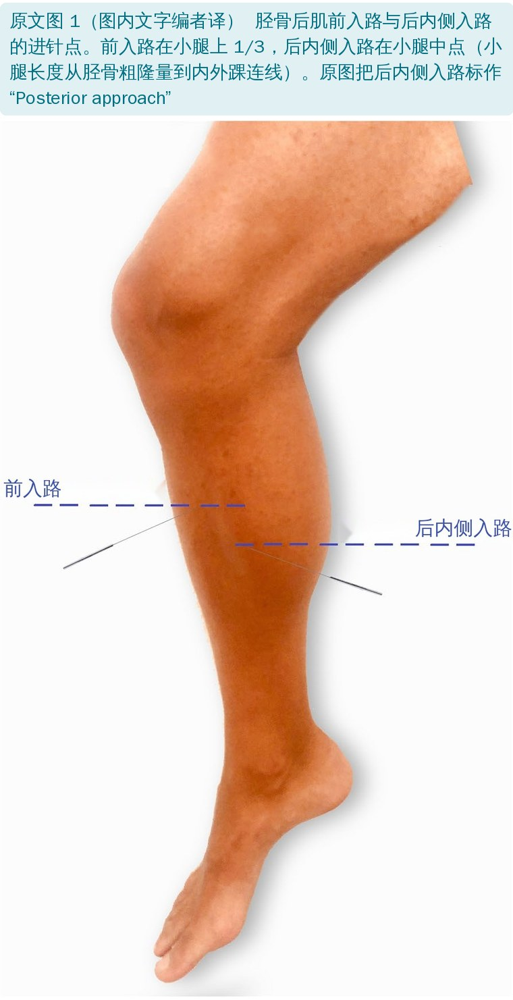
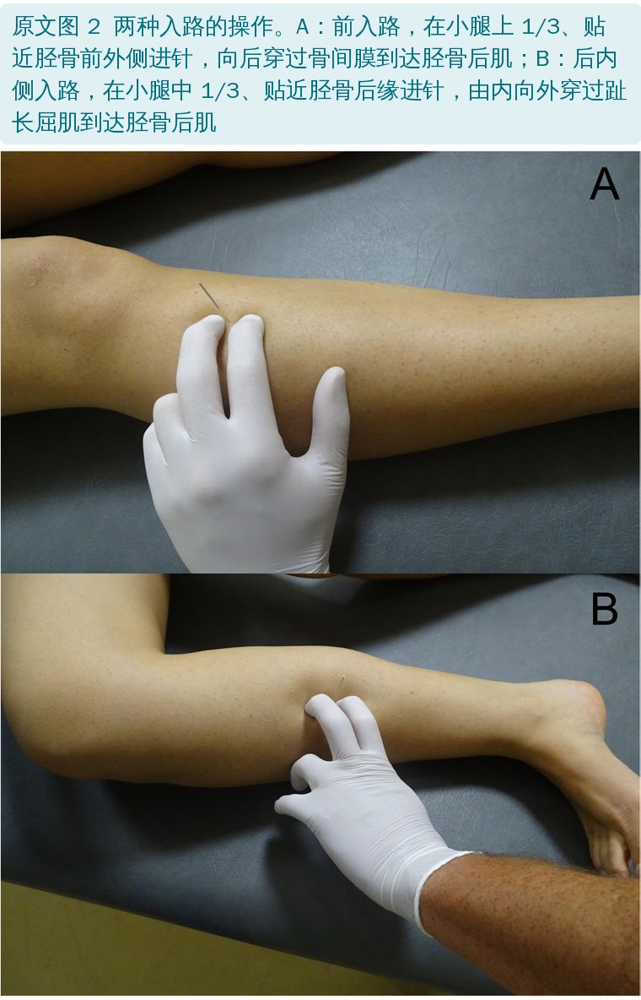
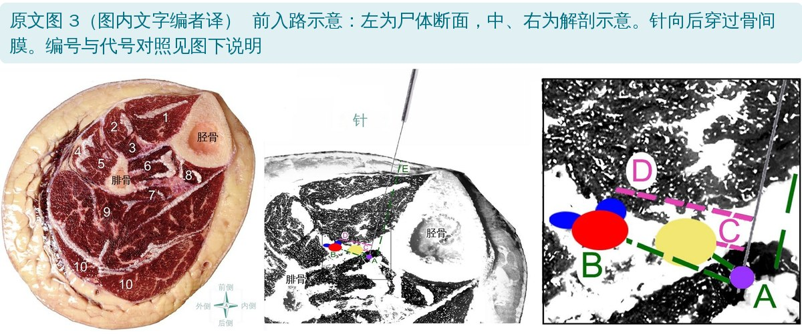
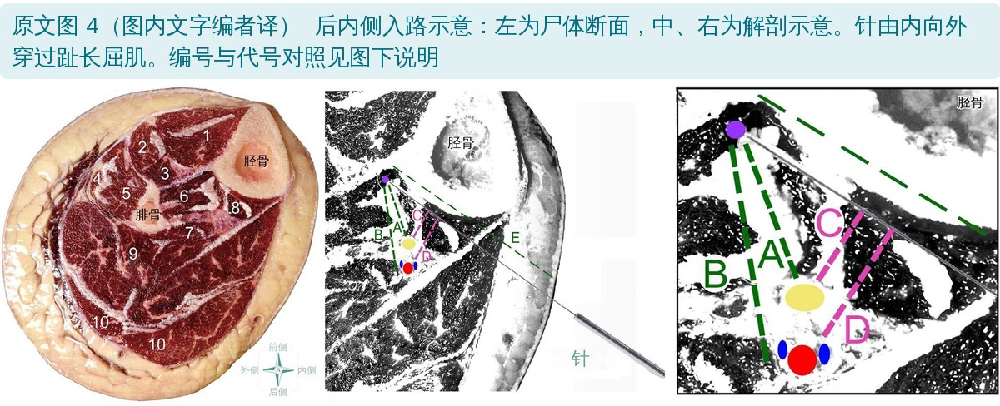
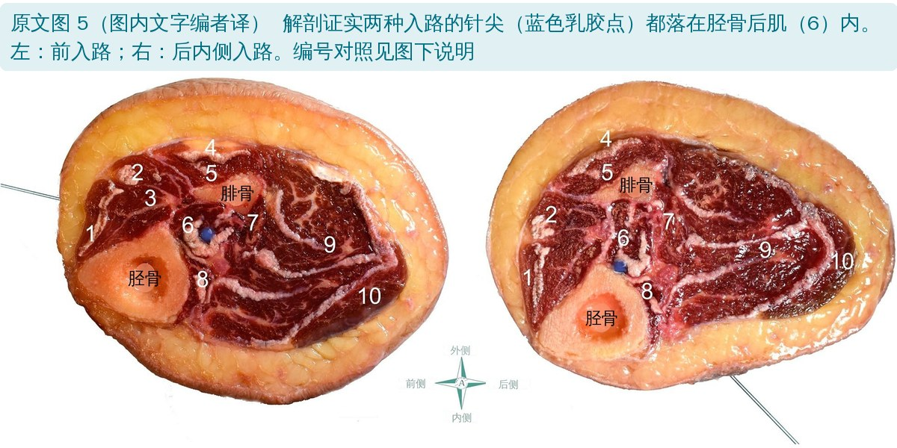
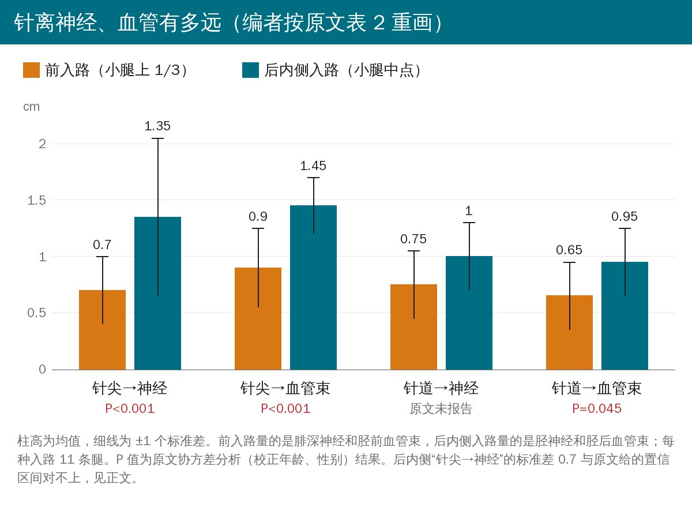
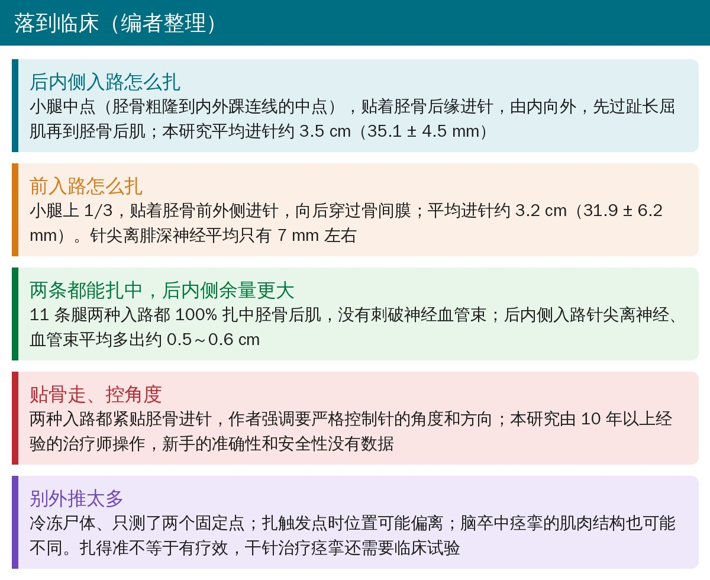

🔖原文信息（编者中文重排）
📚 文献信息
▪ Pérez-Bellmunt A, López-de-Celis C, Rodríguez-Sanz J, Koppenhaver SL, Zegarra-Chávez D, Ortiz-Miguel S, Fernández-de-las-Peñas C. The posterior/medial dry needling approach of the tibialis posterior muscle is an accurate and safe procedure: a cadaveric study. BMC Musculoskelet Disord. 2022;23:570. doi:10.1186/s12891-022-05530-3
▪ 中文题目：胫骨后肌后内侧干针入路是一种准确且安全的操作：尸体研究
▪ 作者单位：西班牙加泰罗尼亚国际大学医学与健康科学学院；ACTIUM 功能解剖小组（巴塞罗那）；美国贝勒大学物理治疗博士项目；西班牙胡安·卡洛斯国王大学物理治疗系
▪ 研究类型：尸体描述性研究（11 条冷冻保存的下肢）
胫骨后肌是足内侧纵弓的重要稳定肌，也是脑卒中后马蹄内翻足的“主力”之一，临床上打肉毒毒素治疗下肢痉挛时，它是最常被注射的肌肉之一。
问题是它藏得太深：前面隔着骨间膜，后面盖着比目鱼肌和趾长屈肌，摸不到，旁边还贴着胫前/胫后神经血管束。肌电图和超声研究给过两种常用进针路线，但大多数治疗师做干针时手边没有超声，靠的是体表标志加解剖知识。
这篇西班牙团队的尸体研究就问了一个很实际的问题：不用超声、凭经验用实心干针扎胫骨后肌，能扎中吗？离神经血管有多远？结论是两种入路都 11/11 扎中、没有刺破神经血管束，后内侧入路离神经血管更远。不过表里有几处数字对不上，后面会讲。
• 11 条冷冻保存的下肢（5 女 6 男，平均 70 ± 16 岁，左腿 7 条、右腿 4 条），来自巴塞罗那一所大学的解剖实验室
• 排除有手术、外伤、解剖变异或影响结缔组织的疾病；-20℃ 保存，实验前室温解冻 24 小时


• 前入路：小腿上 1/3，贴近胫骨前外侧进针，向后穿过骨间膜到胫骨后肌；风险结构是胫前动静脉和腓深神经
• 后内侧入路：小腿中点，贴近胫骨后缘进针，由内向外穿过趾长屈肌到胫骨后肌；风险结构是胫后动静脉和胫神经
• 小腿长度先用尺子量：胫骨粗隆到内外踝连线
• 针具：70 mm × 0.32 mm 带塑料套管的不锈钢实心针；由一名 10 年以上干针经验的物理治疗师操作，进针深度凭临床判断
• 针到位后注射乳胶标记针尖位置，针留在原处，再在目标区解剖一个 4 cm × 4 cm 的窗口
• 横断面解剖拍照，用照片测量软件（photometry）量 5 个指标：
| 代号 | 测的是什么 |
|---|---|
| A | 针尖到神经的距离（后内侧：胫神经；前：腓深神经） |
| B | 针尖到血管束最近分支的距离（胫后 / 胫前血管束） |
| C | 针道到神经的最近距离 |
| D | 针道到血管束的最近距离 |
| E | 进针深度：到达胫骨后肌时插入的长度 |

🔖前入路：测量对象是腓深神经和胫前血管束。右侧放大图：A 针尖→神经，B 针尖→血管束，C 针道→神经，D 针道→血管束，E 进针深度。紫点为针尖，黄色为神经，红、蓝为动脉和静脉（颜色含义为编者按测量定义推断，原文未注明）。图中编号：1 胫骨前肌，2 趾长伸肌，3 拇长伸肌，4 腓骨长肌，5 腓骨短肌，6 胫骨后肌，7 拇长屈肌，8 趾长屈肌，9 比目鱼肌，10 腓肠肌

🔖后内侧入路：测量对象是胫神经和胫后血管束。右侧放大图：A 针尖→神经，B 针尖→血管束，C 针道→神经，D 针道→血管束，E 进针深度。紫点为针尖，黄色为神经，红、蓝为动脉和静脉（颜色含义为编者按测量定义推断，原文未注明）。图中编号：1 胫骨前肌，2 趾长伸肌，3 拇长伸肌，4 腓骨长肌，5 腓骨短肌，6 胫骨后肌，7 拇长屈肌，8 趾长屈肌，9 比目鱼肌，10 腓肠肌
统计用协方差分析（ANCOVA）比较两种入路，年龄和性别作为协变量，P < 0.05 为显著。

🔖图中编号：1 胫骨前肌，2 趾长伸肌，3 拇长伸肌，4 腓骨长肌，5 腓骨短肌，6 胫骨后肌，7 拇长屈肌，8 趾长屈肌，9 比目鱼肌，10 腓肠肌。蓝色小点为标记针尖的乳胶。
解剖显示，两种入路的针尖都扎进了胫骨后肌肌腹（11/11，准确率 100%），11 条腿都没有刺破神经血管束。两种入路到达胫骨后肌的深度没有显著差别（P = 0.195）。

原文表 2 针到神经血管束的距离（编者中文重排，原表单位见文末“对不上的地方”）
| 指标 | 前入路（上 1/3） | 后内侧入路（中点） |
|---|---|---|
| 到胫骨后肌深度 | 31.9 ± 6.2 mm | 35.1 ± 4.5 mm |
| 针尖→神经 | 0.7 ± 0.3 cm | 1.35 ± 0.7 cm |
| 针尖→血管束 | 0.9 ± 0.35 cm | 1.45 ± 0.25 cm |
| 针道→神经 | 0.75 ± 0.3 cm | 1.0 ± 0.3 cm |
| 针道→血管束 | 0.65 ± 0.3 cm | 0.95 ± 0.3 cm |
前入路的神经是腓深神经（原表缩写 DFN）、血管束是胫前血管束；后内侧入路的神经原表写作 TPN（tibialis posterior nerve，正文写的是胫神经）、血管束是胫后血管束。VB 为血管束，TP 为胫骨后肌。
• 针尖→神经：后内侧比前入路远 0.6 cm（95%CI 0.35～0.85，F = 22.394，P < 0.001）
• 针尖→血管束：后内侧远 0.55 cm（95%CI 0.3～0.8，F = 16.580，P < 0.001）
• 针道→血管束：后内侧远 0.25 cm（95%CI 0.1～0.4，F = 5.204，P = 0.045）
• 针道→神经：原文没有报告组间比较结果
• 年龄、性别都不影响主要结果（性别各项 P ≥ 0.252，年龄各项 P > 0.124）
换句话说：前入路针尖离腓深神经平均只有 7 mm 左右，后内侧入路针尖离胫神经约 1.35 cm。都没扎到，但前者的余量小得多。
• 和超声研究一致：以往超声引导、用肌电针的研究也认为两种入路可行，本研究证明不用超声、用实心干针也能扎准
• 为什么重要：胫骨后肌摸不到，干针可能是能直接作用于这块深层肌肉的唯一徒手治疗手段；近期荟萃分析显示干针对脑卒中后下肢痉挛有中等质量证据支持
• 距离比“安全窗”小是正常的：超声研究的“安全窗”是胫骨到神经血管束的解剖距离，本研究量的是针到神经血管束的实际距离，所以数值更小
• 操作提醒：两种入路都紧贴胫骨进针，要严格控制针的角度和方向
• 局限：只有 11 条腿，样本小，没法分析性别差异；只测了两个固定进针点，扎触发点时位置可能不同；都由一位经验丰富的治疗师一次完成，新手的准确性和安全性未知；尸体没有痉挛，痉挛—肌张力增高可能改变肌肉结构和解剖参照
"This cadaveric study suggests that needling of the tibialis posterior muscle can be accurately and safely conducted. Safety seems to be larger with the posterior/medial approach when compared with the anterior approach."
"这项尸体研究提示，胫骨后肌针刺可以准确、安全地完成；与前入路相比，后内侧入路的安全性似乎更高。"
• 样本很小，而且是“理想条件”：11 条冷冻腿、一位资深治疗师、两个预先定好的点、进针后不提插。真实诊疗里患者会动、肌肉有张力、扎触发点时会反复提插和改变方向
• “没扎到”≠“不会扎到”：11 次里 0 次刺破，按“三分之一法则”，真实风险的 95% 上限仍可能接近 3/11 ≈ 27%，样本量不足以证明“安全”，只能说明这两条路线有一定的距离余量（编者观点）
• 统计方法值得商榷：两种入路做在同一批 11 条腿上，属于配对数据，原文却用协方差分析当作两组独立样本比较，还把“性别”放进 11 个样本的模型里（编者观点）
• 颜色、测量细节交代不足：示意图中的颜色没有图例；测量是在照片上做的，没说测量者是否设盲、有没有重复测量的信度
• 优点：问题很贴临床；用实心干针而不是肌电针；同时看针尖和整条针道；方法和进针点描述清楚，容易复现
• 尸体数量：摘要说“11 具尸体（11 cryopreserved cadavers）”，方法说“11 条下肢”，结果说“10 具尸体（20 条腿）中取了 11 条腿”，讨论又说“11 具尸体”。实际应是 11 条腿，来自不超过 10 具尸体
• 表 2 单位混乱：表题写“距离（mm）”，但表中距离都标 cm；“到胫骨后肌深度（mm）31.9 ± 6.2”后面的区间又写成“27.7 to 36.1 cm”。方法部分 A～D 的定义也写的是 mm
• 一个标准差可能写错：后内侧“针尖→胫神经”1.35 ± 0.7 cm，95%CI 1.15～1.55 cm。按 11 条腿算，SD 0.7 对应的置信区间应约为 0.88～1.82；表中其他各项的 SD 和 CI 都能对上（如 31.9 ± 6.2 → 27.7～36.1）。推测 SD 应为 0.3 左右（编者推算）
• 差值和表格不完全一致：表中针尖→神经两组差 0.65 cm、针道→血管束差 0.30 cm，正文报告的是 0.6 cm 和 0.25 cm，可能是协方差校正后的值，原文没有说明
• 神经名称：方法写后内侧入路测的是“胫神经（tibial nerve）”，表 2 却写成“TPN 胫骨后肌神经（tibialis posterior nerve）”
• 入路名称：全文称“后/内侧入路（posterior/medial）”，图 1 标的是“Posterior approach”（本文中文版统一译为“后内侧入路”）

• 没有超声时，优先考虑后内侧入路：小腿中点、贴胫骨后缘、由内向外，穿过趾长屈肌，平均约 3.5 cm 到达胫骨后肌
• 用前入路时格外小心：上 1/3 贴胫骨前外侧向后穿骨间膜，针尖离腓深神经平均只有 7 mm 左右，控制深度和方向
• 贴骨走：两种入路都紧贴胫骨，角度一偏就可能接近神经血管束；新手建议先在超声下练习定位（编者补充）
• 别把“扎得准”当成“有疗效”：这篇只回答了能不能扎中、离神经血管多远，干针治疗痉挛或足部问题的效果还需要临床试验
欢迎关注骨科康复小黄公众号，获取更多物理治疗的专业知识！
📄参考文献：
Pérez-Bellmunt A, López-de-Celis C, Rodríguez-Sanz J, Koppenhaver SL, Zegarra-Chávez D, Ortiz-Miguel S, Fernández-de-las-Peñas C. The posterior/medial dry needling approach of the tibialis posterior muscle is an accurate and safe procedure: a cadaveric study. BMC Musculoskelet Disord. 2022;23:570. doi:10.1186/s12891-022-05530-3
原文 © The Author(s) 2022，以知识共享署名 4.0 国际许可协议（CC BY 4.0）开放获取。本文为中文解读，改动说明：原文图 1、3、4、5 图内英文及缩写（T 胫骨、F 腓骨、Needle 针、方位词、入路标签）由编者擦除后原位改写为中文，肌肉编号 1～10 和测量代号 A～E 保留原样，对照见图注；原文图 2 原样引用；示意图颜色含义为编者推断；距离柱状图为编者按原文表 2 数据重画；首图、临床要点卡和封面为编者根据原文整理绘制。